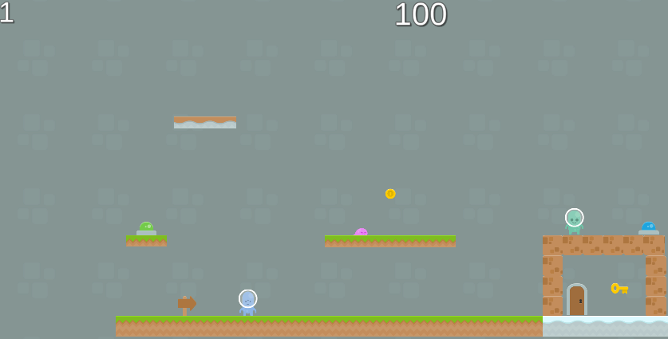
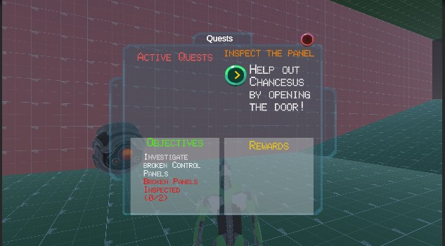
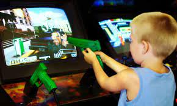
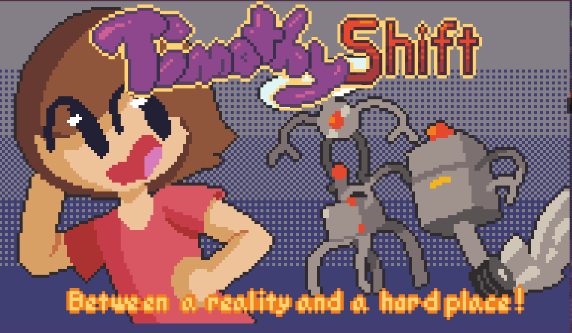

Jump into this alien world and battle againts angry slimes, lava lakes, and jump puzzles.
Alien Jumper is a local 2 player game with 3 levels, coin system, disappearing platforms, and breakable objects.


Play as a robot trapped in an unknown area trying to find his way home. Currently implemented is a dialogue system,
Quest system, NPC, and event system.

Welcome aboard the Autumn Express! This game jam entry features an I-Spy style game set in a train car during the middle of Autumn. Theorized, planned, built and published by a small team of two developers.
The Autumn Express includes 12 unique items to find, each with 4 different spawns, and a wonderful UI and music to keep you playing again and again!
First attempt, I built without any resources, just the prompt.
The second attempt, I used my knowledge/experience from building the first project as well as any outside resources that I felt would improve my code. Some improvements I made were,
"try catch" statements to ensure user doesn't break system, simulated database of users by using a list and check against it, currency exchange feature, and some colored text to improve
user experience.

Built out some of the core mechanics for a first and third person shooter. Player is able to toggle which view they want. You can also
choose between a ray gun, pistol, or the classic AK-47 to slay the onslaught of zombies. Project is more of a framework than a complete game
but it is shipped to WebGL.

Growing up I had always heard people say "Video games cause violence" and now that I had the tools, I wanted to see if what
they were saying had any truth.
Studied and passed California Insurance Exam. Shortly after, I accepted a position as New York Life agent in training. Hit sales goals to become full time life insurance agent. Duties included setting and running client meetings,
marketing strategies, and having complex conversations with clients regarding their financial futures.

Collaborated with group of 10 people to publish a game within 48 hours. We split into 3 teams, designers, artists, and programmers.
I worked on the programming team and developed the player controls. Set up source control and provided support.

Ambula is a tech start up developing the latest software for ambulatory surgery centers. I worked as the Customer Sucess Lead.
This included maintainin ongoing relationships with clients, prospecting for new clients, relaying any bug fixes or customizations of software to
engineers.